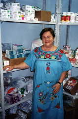

| Rosa Behar
- A doctor on a mission
Rosa Behar radiates energy, whether sitting, standing, or more likely, moving quickly and with confidence toward one of her many involvements. Dr. Behar is a gastroenterologiest and Department Chair in Havana's Calixto Garcia Hospital. She is also a wife, mother, grandparent, and a dedicated volunteer in charge of the Patronato (Havana´s Jewish Community Center) pharmacy. Her husband, Aleop Tur Gutiérrez, is a retired marine engineer and Captain in Cuba's Merchant Marines. Rosa works in an environment where simple items like vitamin C are in short supply, and more complex needs such as asthma inhalers are almost non-existent. It has become Rosa´s personal mission to provide for the medical needs of her community, both Jewish and non-Jewish. Reaching her current professional and personal success has been a demanding journey. In the 1930s Rosa´s father left Cuba to study in France´s Sorbonne. While there he fell in love, married, and Rosa was born. Shortly before WWII began Rosa's father, his wife, and Rosa left France and moved to Cuba. Rosa attended schools in Cuba and received her medical degree from the University of Havana. While the Soviet influence was strong in Cuba Rosa made around 700 pesos a month, roughly equivalent in those days to 700 dollars a month, an excellent salary by Cuban standards. When the Soviet empire fell apart and support for Cuba ended, Cuba entered what is called a "special period." Rosa´s salary diminished to around $30 a month, which is where it is today. "It makes things difficult," she says with characteristic modesty.
In spite of the personal hardships caused by the "Special Period," Rosa has looked beyond herself and, as part of a team of four, has created a pharmacy which provides medicine free of charge to the Patronato´s neighbors and to the outlying Jewish communities. She credits her daughter Rebeca, a licensed pharmacist, with the original idea. "We had two small boxes of medicine donated to us," Rosa says, "and Rebeca looked at them and asked why we shouldn´t take these donations, distribute them to people in need, and then ask for more." The Patronato Farmacia was born. Because the four individuals who run the pharmacy all have professional jobs and limited time, the pharmacy is only open formally on Tuesdays from two until four, although it takes longer to serve all the people waiting. In that short time an average of 50 families will receive medicine. Additionally, staff members come into the pharmacy in their spare time and prepare boxes of medicine for other Jewish communities, ranging from as far away as Santiago de Cuba, 869 kilometers away in eastern Cuba, and Guantanamo, a small community near the American military base. Patients are required to have a prescription from their family doctor, and if the pharmacy has the medicine it is free. Otherwise the patients needs to seek out the medicine in the "peso" market, where little is available, or on the "dollar" market, where most items seem to appear. Cuba is increasingly moving toward an economy based on the United States dollar. Those with access to dollars can get by. Those without access suffer.  Typical medical problems faced by Cubans include asthma, hypertension, ulcers, and diabetes type 2. When asked what was in shortest supply, Rosa replies "Vitamins C and E, and asthma spray, particularly the replacement bottles for the inhalers." Donations today come primarily from the numerous Jewish groups which visit the synagogue. In a recent visit from a Boston (United States) congregation, each participant brought a flight bag filled with different medicines. Rosa and her team methodically go through these donations, categorizing them and organizing them for individuals and for other destinations, such as hospitals. Rosa particularly enjoys working with young children as a member of Hadassah (she is president of the Havana chapter), delivering medicine to them in Sunday school, and working with their families in educational programs designed to prevent disease. Rosa is also chairman of the Patronato woman's group, a growing and active organization. Rosa is not alone in her volunteer work with the pharmacy. In addition to her daughter Dr. Rebeca Tur Behar, she is helped by Dr. Tamara Rousso, and Professor Lourdes Albo. In terms of outside help, she credits the JDC with helping strengthen Cuba´s Jewish community, Stan Cohen of B´nai B´rith´s Cuban Jewish Relief Project, June Safran of the Cuba-America Jewish Mission, and Diego and Laura Mendelbaum, Ivan and Cynthia Glait, Nestor Szewach and Mara Steiner. Dr. Behar brings a combination of intensity and joy to her volunteer work, working quickly to fill prescriptions, but taking a few moments to answer a patient´s questions. Her energy seems to spread to others, and those who have spoken with her seem to move away from her with more enthusiasm.
|